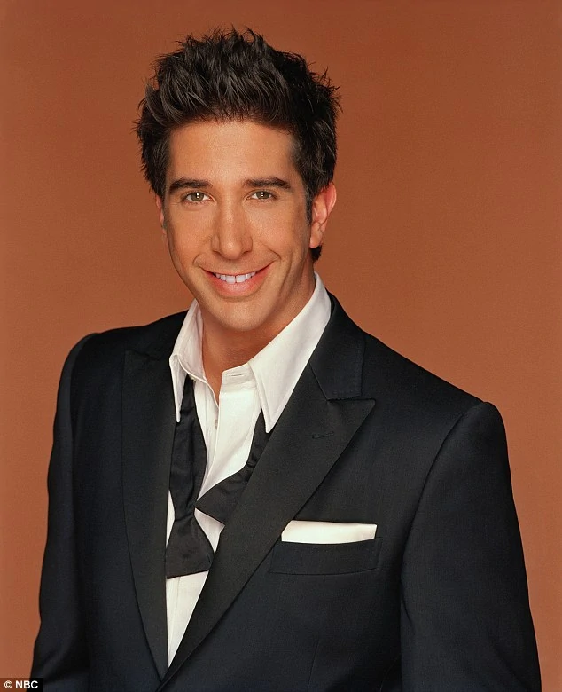

| Picture |
Character |
Description |
 |
Monica Geller |
Monica E. Geller is one of the main characters on the popular sitcom Friends (1994–2004), played by Courteney Cox. Monica was known as the "Mother Hen" of the group and her Greenwich Village apartment was one of the group's main gathering places throughout the series. |
|
Rachel Greene |
Rachel Karen Greene is one of the main characters on Friends (1994–2004). She was played by Jennifer Aniston, who received Emmy Awards and a Golden Globe for her performance. |
|
Phoebe Buffay |
Phoebe Buffay-Hannigan (née Buffay) is one of the main characters on the popular sitcom Friends (1994–2004), portrayed by Lisa Kudrow. She is best known for her bohemian lifestyle, silly wit and guitar playing in Central Perk. |
|  |
Ross Geller |
Ross Geller, Ph.D. was one of the main characters on Friends (1994–2004). He was portrayed by David Schwimmer. He's best known for his nerdy personality and very awkward sense of humor, much like Screech from Saved By The Bell, or David from Beverly Hills, 90210. |
 |
Chandler Bing |
Chandler Muriel Bing is one of the main characters on the popular sitcom Friends. He is portrayed by Matthew Perry. He is notable for his sarcastic and witty sense of humor. |
|
Joey Tribbiani |
Joseph Francis "Joey" Tribbiani Jr., was one of the main characters on Friends (1994–2004) and the title character in the spin-off Joey (2004–2006). He is best known for being a ladies' man and a rather silly but adorable personality. He was portrayed by Matt LeBlanc. |